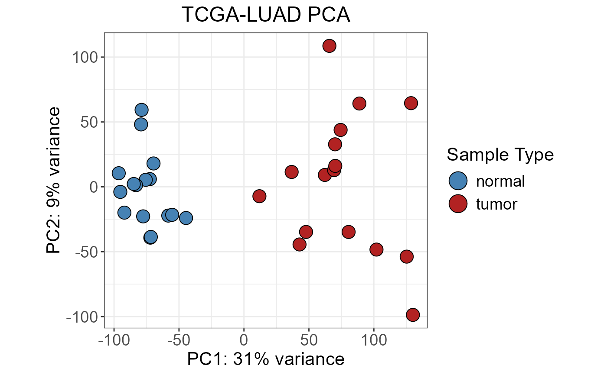

Variance-stabilized counts matrix for TCGA-LUAD
vst_counts.RdVariance Stabilizing Transformation (VST) applied to the TCGA-LUAD RNA-seq
dataset (16 tumor samples, 16 normal samples) using DESeq2::vst() with
blind = TRUE. VST removes the mean-variance dependence characteristic of
RNA-seq count data, placing all genes on a comparable log2-like scale. This
makes it the appropriate input for sample-level dimensionality reduction and
clustering methods.
Format
A numeric matrix with 21,330 rows (genes) and 32 columns (samples):
- rows
Ensembl gene IDs (e.g.,
"ENSG00000141510").- columns
Sample IDs matching the
patient_idcolumn of sampledata.- values
Numeric. VST-transformed expression values on a log2-like scale. Range: [1.78, 20.85].
Source
TCGA-LUAD STAR counts downloaded from the GDC Data Portal
(https://gdc-hub.s3.us-east-1.amazonaws.com/download/TCGA-LUAD.star_counts.tsv.gz).
Transformed with DESeq2::vst() (blind = TRUE); generated by
data-raw/deseq2_results.R.
Details
Suitable as input for nice_PCA(), nice_UMAP(), and nice_tSNE(). For
gene-level expression plots (nice_VSB()) or filtering (detect_filter())
use norm_counts instead.
Examples
data(vst_counts)
data(sampledata)
# Dimensions
dim(vst_counts)
#> [1] 21330 32
# Value range (log2-like scale)
range(vst_counts)
#> [1] 1.784263 20.849634
# PCA plot colored by sample type
colnames(sampledata)[colnames(sampledata) == "patient_id"] <- "id"
nice_PCA(
object = vst_counts,
annotations = sampledata,
variables = c(fill = "sample_type"),
legend_names = c(fill = "Sample Type"),
colors = c("steelblue", "firebrick"),
shapes = c(21, 21),
title = "TCGA-LUAD PCA"
)

if (FALSE) { # \dontrun{
# UMAP plot
colnames(sampledata)[colnames(sampledata) == "patient_id"] <- "id"
nice_UMAP(
object = vst_counts,
annotations = sampledata,
variables = c(fill = "sample_type"),
legend_names = c(fill = "Sample Type"),
colors = c("steelblue", "firebrick"),
shapes = c(21, 21),
title = "TCGA-LUAD UMAP"
)
# tSNE plot
# perplexity must be lower than the number of samples divided by 3
colnames(sampledata)[colnames(sampledata) == "patient_id"] <- "id"
nice_tSNE(
object = vst_counts,
annotations = sampledata,
perplexity = 5,
variables = c(fill = "sample_type"),
legend_names = c(fill = "Sample Type"),
colors = c("steelblue", "firebrick"),
shapes = c(21, 21),
title = "TCGA-LUAD tSNE"
)
} # }